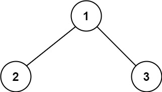
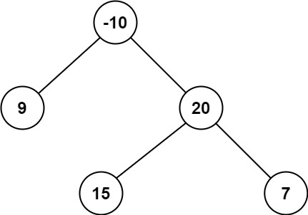

题面
二叉树中的路径 被定义为一条节点序列，序列中每对相邻节点之间都存在一条边。同一个节点在一条路径序列中 至多出现一次 。该路径至少包含一个 节点，且不一定经过根节点。
路径和 是路径中各节点值的总和。
给你一个二叉树的根节点 root ，返回其 最大路径和 。
示例 1：

输入： root = [1,2,3]
输出： 6
解释： 最优路径是 2 -> 1 -> 3 ，路径和为 2 + 1 + 3 = 6示例 2：

输入： root = [-10,9,20,null,null,15,7]
输出： 42
解释： 最优路径是 15 -> 20 -> 7 ，路径和为 15 + 20 + 7 = 42提示：
树中节点数目范围是 [1, 3 104]
-1000 <= Node.val <= 1000
思路
- 和第 40 题（543. 二叉树的直径）完全同一个模式：递归返回值和答案不是同一个东西（hybrid 模式）
- 站在一个节点的视角：
- 经过我的最大路径和 = 左边贡献 + 自己 + 右边贡献 → 用副作用更新
self.ans - 向上层汇报 = max(左, 右) + 自己 → 只能选一边，因为路径不能分叉（上层还要接着往上走）
- 节点值可能是负数，如果某边贡献是负的，不如不要 →
max(left, 0)
和直径的对比
直径（第 40 题） | 本题（最大路径和） | |
|---|---|---|
递归返回 | 单边最大深度 | 单边最大路径和 |
副作用更新 |
|
|
向上层返回 |
|
|
额外处理 | 无 |
|
直接看代码对比：
# 直径（第 40 题）
def dfs(node):
if not node:
return 0
left = dfs(node.left)
right = dfs(node.right)
self.ans = max(self.ans, left + right) # 经过我的最长直径
return max(left, right) + 1 # 单边深度给上层
# 本题（最大路径和）——把"深度"换成"路径和"，加负数处理
def dfs(node):
if not node:
return 0
left = max(dfs(node.left), 0) # 负数不如不要
right = max(dfs(node.right), 0) # 负数不如不要
self.ans = max(self.ans, left + right + node.val) # 经过我的最大路径和
return max(left, right) + node.val # 单边路径和给上层- 为什么答案可以左+右，但返回只能选一边？ 路径是一条线，不能分叉。经过当前节点的路径可以"拐弯"（左→我→右），但给上层的贡献只能是一条直线（左→我 或 右→我），否则上层接上去就变成三叉了
递归模式总结
模式 | 特征 | 典型题目 |
|---|---|---|
纯 return 传值 | 返回值就是最终答案 | maxDepth、有序数组转BST、最近公共祖先 |
纯副作用 | 不用返回值 | 中序遍历、第k小 |
hybrid（本题） | 返回值给上层用，答案用副作用更新 | 直径、本题 |
代码实现
class Solution:
def maxPathSum(self, root: Optional[TreeNode]) -> int:
self.ans = -inf
def dfs(node):
if not node:
return 0
left = dfs(node.left)
# 与负数比较，如果是负数，宁可不要了
left = max(left, 0)
right = dfs(node.right)
right = max(right, 0)
self.ans = max(self.ans, right + left + node.val)
return max(left, right) + node.val
dfs(root)
return self.ans- 易错点：
- `self.ans` 初始值必须是 `-inf`，不能是 0：如果所有节点都是负数（如
root=[-3]），ans=0 会大于真实答案，导致返回错误的初始值 - 返回值和答案搞混：
self.ans更新用left + right + node.val（可以分叉），返回用max(left, right) + node.val（只选一边）。和直径那题一模一样的坑 - `max(left, 0)` 别忘：负数的子树贡献不如不要，直接当 0 处理
- 空节点返回 0 不是 None：返回 None 会导致
max(left, 0)报错（None 不能和 int 比较） - `right = dfs(node.right)` 不是 `dfs(node.left)`：复制粘贴容易写错
- 复杂度：时间 O(n)，空间 O(n)（递归调用栈）